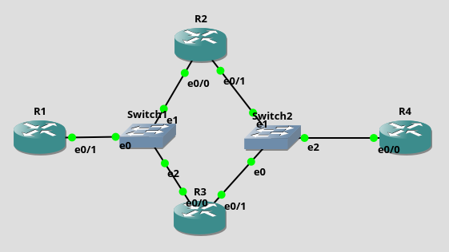

IPv6
Теоретические сведения
Особенности IPv6
- Сетевой уровень
- Появился из-за нехватки IPv4-адресов
- Временное решение - NAT
- IPv6 несовместим с IPv4
- Двойной стек
- Туннелирование
- Преобразование
- Длина адреса 128 бит
Треминология
- Префикс
- 2000:1234:0:abcd::ffe0/64
- Длина префикса
- 2000:1234:0:abcd::ffe0/64
- Адрес интерфейса
- 2000:1234:0:abcd:12::ffe0/64
Основные зарезервированные адреса
::1/128- loopback::/0- default gateway2001::/32,2002::/16- global unicastfc00::/7- unique local unicast- Могут использоваться внутри организации без регистрации
- Не маршрутизуруются в Интернет
fe80::/10- link-local- Используются в рамках сегмента сети
- Задается устройством автоматически, но можно изменить
- Маршрутизаторы не передают пакеты в другой сегмент
2001:db8::/32,3fff::/20- documentationff00::/8- multicast- Используются вместо широковещательных адресов, т.к. их нет в IPv6
ff02::1- все узлы в широковещательном доменеff02::2- все маршрутизаторы в широковещательном домене
Правила сокращения адресов
3fff::0:0001:023:456/64:
- Полный адрес -
3fff:0000:0000:0000:0000:0001:0023:0456/64 - Сокращенный, но не максимально -
3fff::0:1:23:456/64 - Максимально сокращенный адрес -
3fff::1:23:456/64
3fff:0:0:0:1:0:0:0/64 можно сократить так 3fff::1:0:0:0/64 или так 3fff:0:0:0:1::/64, но не так 3fff::1::/64, поскольку нельзя точно сказать, в каком блоке :: сколько нулевых блоков.
3fff::0001/64 и 3fff::1000/64 - не одно и то же! 3fff::0001/64 - можно сократить до 3fff::1/64, а второй адрес сократить больше нельзя.
Вычисление префикса
-
Если длина префикса кратна 16, то префикс граничит по символу
:.-
3fff:0000:1111:2222:3333:4444:5555:6666/64 -> 3fff:0000:1111:2222:0000:0000:0000:0000/64 -> 3fff:0000:1111:2222::/64
-
3fff:0000:1111:2222:3333:4444:5555:6666/48 -> 3fff:0000:1111::/48
-
-
Если длина префикса кратна 4, то префикс граничит по символу
:или между 16-ичными символами.-
3fff:0000:1111:2222:3333:4444:5555:6666/60 -> 3fff:0000:1111:2220:0000:0000:0000:0000/60 -> 3fff:0000:1111:2220::/60
-
3fff:0000:1111:2222:3333:4444:5555:6666/52 -> 3fff:0000:1111:2000::/52
-
-
Если длина префикса не кратна 4, то префикс граничит внутри 16-ичного символа. Для этого "разрезанный" символ для лучшего понимания лучше выписать в 2-ичном виде.
3fff:0000:1111:2222:\(^{/64}\)3\(^{/68}\)333:4444:5555:6666/67
3fff:0000:1111:2222:\(^{/64}\)0011\(^{/68}\)333:4444:5555:6666/67
3fff:0000:1111:2222:\(^{/64}\)0010\(^{/68}\)000::/67
3fff:0000:1111:2222:2000::/67
Способы назначения IPv6-адресов
- Вручную
- SLACC
- Префикс выдает маршрутизатор
- Идентификатор интерфейса формируется с помощью EUI-64
- DHCPv6
EUI-64
Идентификатор интерфейса формируется на основе его MAC-адрес.
В середину MAC вставляется ff:fe, а потом инвертируется второй младший бит первого байта.
11:22:33:44:55:66 -> 11:22:33:ff:fe:44:55:66 -> 13:22:33:ff:fe:44:55:66
11 -> 00010001 -> 00010011 -> 13
Недостатки
Адрес постоянный, можно отслеживать действия. Вместо этого способа можно включить случайную генерацию идентификатора интерфейса.
Разделение на подсети
- С использованием идентификатора подсети
- С использованием идентификатора интерфейса
С использованием идентификатора подсети
- Удобный способ
- Большое количество подсетей - \(2^{16}\)
- Большое количество узлов - \(2^{64}\)
3fff:0:0:000D::/64
3fff:0:0:000E::/64
3fff:0:0:000F::/64
3fff:0:0:????::/64
...
3fff:0:0:0999::/64
3fff:0:0:????::/64
С использованием идентификатора интерфейса
- Принцип похож на разделение по подсети в IPv4
- Полубайт - удобная граница подсети
ARP
- В IPv6 его нет.
- Вместо него используется ICMPv6 с сообщениями типа
NSиND. - У всех адресов одинаковый префикс
FF02::1:FF00:0/104. К нему добавляются 24 младших бита адреса (unicast или anycast). В результате multicast-адрес может быть в диапазоне отFF02:0:0:0:0:1:FF00:0000доFF02:0:0:0:0:1:FFFF:FFFF.
См. тему ICMP.
Примеры
Пример 1
2000::/64
2000:0:0:0000::/64
Нужно подсетей - 8.
Нужно 3 бита.
0 подсеть - 2000:0:0:0000:0000 0000 0000 0000::/67
0 подсеть - 2000:0:0:0000:0000::/67
1 подсеть - 2000:0:0:0000:0010 0000 0000 0000::/67
1 подсеть - 2000:0:0:0000:2000::/67
2 подсеть - 2000:0:0:0000:0100 0000 0000 0000::/67
2 подсеть - 2000:0:0:0000:4000::/67
3 подсеть - 2000:0:0:0000:0110 0000 0000 0000::/67
3 подсеть - 2000:0:0:0000:6000::/67
4 подсеть - 2000:0:0:0000:1000 0000 0000 0000::/67
4 подсеть - 2000:0:0:0000:8000::/67
5 подсеть - 2000:0:0:0000:1010 0000 0000 0000::/67
5 подсеть - 2000:0:0:0000:a000::/67
6 подсеть - 2000:0:0:0000:1100 0000 0000 0000::/67
6 подсеть - 2000:0:0:0000:c000::/67
7 подсеть - 2000:0:0:0000:1110 0000 0000 0000::/67
7 подсеть - 2000:0:0:0000:e000::/67
Пример 2
2000::/64
2000:0:0:0000::/64
Нужно подсетей - 500.
Нужно 9 битов.
0 подсеть - 2000:0:0:0000:0000::/73
1 подсеть - 2000:0:0:0000:0000 0000 1000 0000::/73
1 подсеть - 2000:0:0:0000:0080::/73
2 подсеть - 2000:0:0:0000:0000 0001 0000 0000::/73
2 подсеть - 2000:0:0:0000:0100::/73
...
300 подсеть - 2000:0:0:0000:1001 0110 0000 0000::/73
300 подсеть - 2000:0:0:0000:9600::/73
...
\(2_{10} = 0000 0001 0_{2}\)
\(300_{10} = 1001 0110 0_{2}\)
Пример 3
2000::/64
2000:0:0:0000::/64
Нужно подсетей - 2000.
Нужно 11 бит.
...
10 подсеть - 2000:0:0:0000:0000 0001 0100 0000::/75
10 подсеть - 2000:0:0:0000:0140::/75
...
100 подсеть - 2000:0:0:0000:0000 1100 1000 0000::/75
100 подсеть - 2000:0:0:0000:0C80::/75
...
1000 подсеть - 2000:0:0:0000:0111 1101 0000 0000::/75
1000 подсеть - 2000:0:0:0000:7D00::/75
...
10 подсеть - 2000:0:0:0000:0140::/75
Нужно внутри этой подсети еще подсетей - 67.
67 подсеть - 2000:0:0:0000:0000 0001 0101 0000:1100 0000 0000 0000::/82
67 подсеть - 2000:0000:0000:0000:0150:C000:0000:0000/82
67 подсеть - 2000::0150:C000:0:0/82
20 подсеть - 2000:0:0:0000:0000 0001 0100 0101:0000 0000 0000 0000::/82
20 подсеть - 2000:0:0:0000:0145:0000:0000:0000/82
20 подсеть - 2000:0:0:0:0140::/82
или
20 подсеть - 2000::0140:0:0:0/82
Пример 4 (unicast + Cisco)
Пример демонстрирует настройку IPv6-адресов и статической маршрутизации.

cont f
ipv6 unicast-routing
int e0/1
ipv6 add 123::1/64
no sh
exit
ipv6 route 234::/64 123::2
ipv6 route 234::/64 123::3
end
cont f
ipv6 unicast-routing
int e0/0
ipv6 add 123::2/64
no sh
exit
int e0/1
ipv6 add 234::2/64
no sh
end
cont f
ipv6 unicast-routing
int e0/0
ipv6 add 123::3/64
no sh
exit
int e0/1
ipv6 add 234::3/64
no sh
end
cont f
ipv6 unicast-routing
int e0/0
ipv6 add 234::4/64
no sh
exit
ipv6 route 123::/64 234::2
ipv6 route 123::/64 234::3
end
На R1 и R4 были созданы 2 маршрута в одну сеть.
Далее в разделе Anycast показано, как заменить два маршрута одним.
Пример 5 (anycast + Cisco)
Пример показывает, как с помощью anycast-адресов можно создавать маршруты.
Схема та же (1)
cont f
int e0/1
ipv6 add 123::1/64
no sh
exit
ipv6 route 234::/64 123::23
end
cont f
ipv6 unicast-routing
int e0/0
ipv6 add 123::23/64 anycast
no sh
exit
int e0/1
ipv6 add 234::23/64 anycast
no sh
end
cont f
ipv6 unicast-routing
int e0/0
ipv6 add 123::23/64 anycast
no sh
exit
int e0/1
ipv6 add 234::23/64 anycast
no sh
end
cont f
int e0/0
ipv6 add 234::4/64
no sh
exit
ipv6 route 123::/64 234::23
end
Используя данный сайт и его ресурсы, вы соглашаетесь с политикой и соглашениями сайта.
©️ Оформление, изложение, медиаматериалы. И. Попов, 2020-2025
Сделано с помощью Material for MkDocs.